K. Kasturirangan is born on October 24, 1940, in Ernakulam, Kerala, to C.M. Krishnaswamy Iyer and Visalakshi. He attends Sree Rama Varma High School, Ernakulam, and later South Indian Education Society High School, in Bombay.
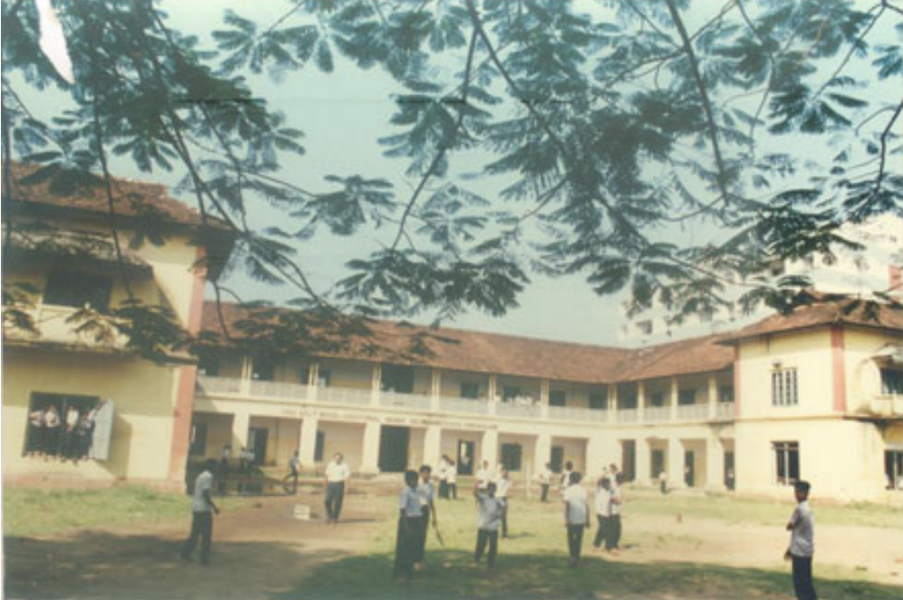
In his book Space and Beyond, KK. Kasturirangan reflects on his life as “extraordinary and many-splendored.” This timeline traces the remarkable journey behind those words.
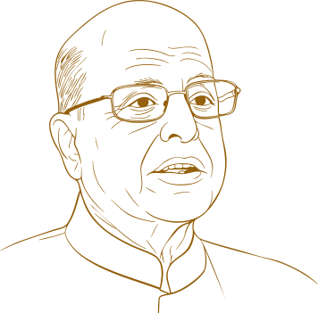
K. Kasturirangan is born on October 24, 1940, in Ernakulam, Kerala, to C.M. Krishnaswamy Iyer and Visalakshi. He attends Sree Rama Varma High School, Ernakulam, and later South Indian Education Society High School, in Bombay.

Completes BSc (Honours) in Physics at Ramnarain Ruia College, Mumbai
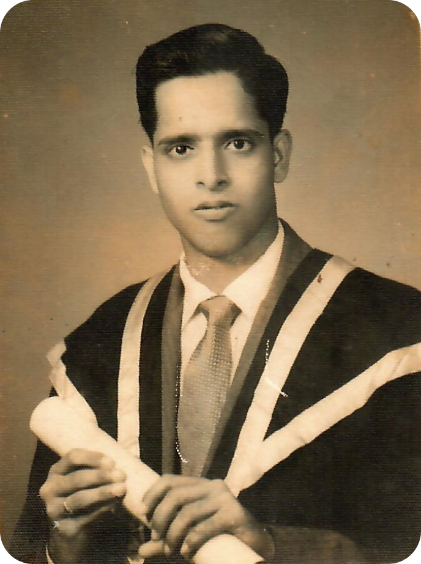
Completes MSc in Physics from Bombay University
Joins Physical Research Laboratory (PRL) for his doctoral work in cosmic X-rays in Vikram Sarabhai’s laboratory
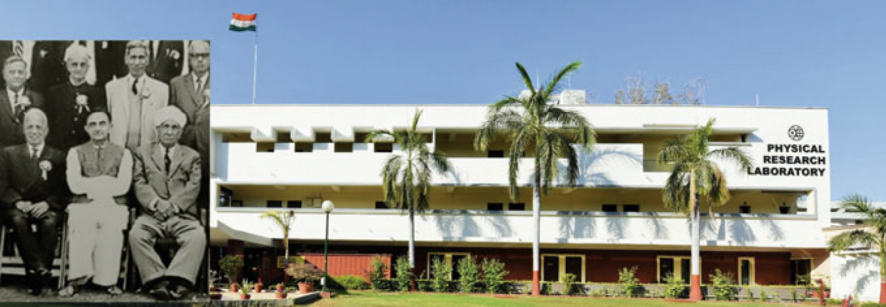
Marries Lakshmi. They have two sons, Rajesh and Sanjay
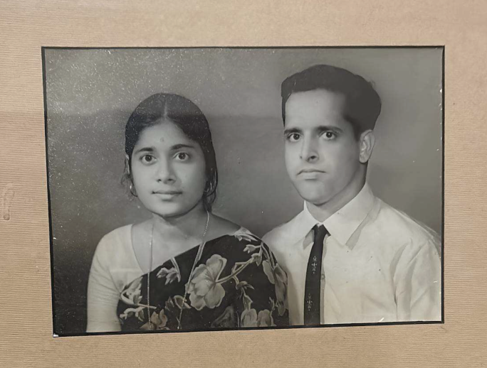
Completes doctorate in experimental high-energy astronomy.
Receives an offer to do postdoctoral work with Nobel Laureate Prof Louis Alvarez at UC Berkeley, but is convinced by Sarabhai to join ISRO instead
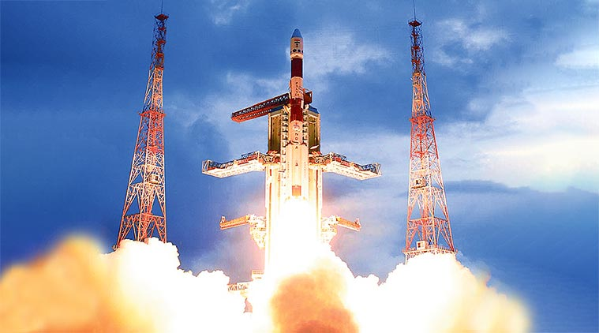
Takes on systems engineering responsibility for Aryabhata, India’s first satellite
Aryabhata is successfully launched by a Soviet Kosmos-3M rocket from Kapustin Yar
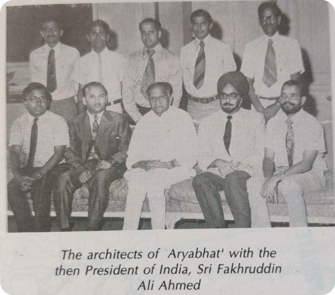
Appointed Project Director for Bhaskara-I, India’s first experimental earth observation satellite
Bhaskara-I is launched
Appointed Project Director for Bhaskara-II
The Aryabhata Project, a book he co-edited with U.R. Rao, is released
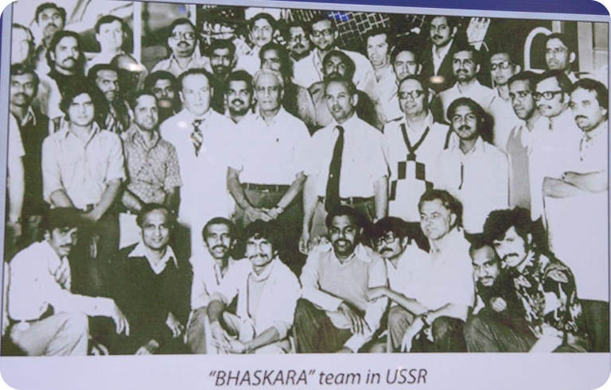
Bhaskara-II launches from Kapustin Yar aboard the Soviet’s Intercosmos launch vehicle
Awarded the Intercosmos Council Award of the Soviet Academy of Sciences
Receives his first Padma award, the Padma Shri, in the Science and Engineering category
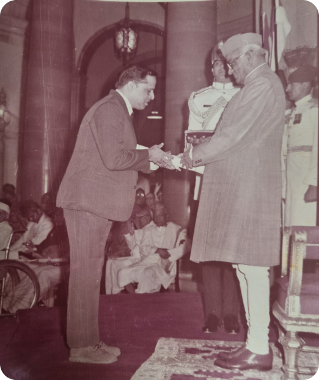
Awarded the Shanti Swarup Bhatnagar Award in Engineering Sciences
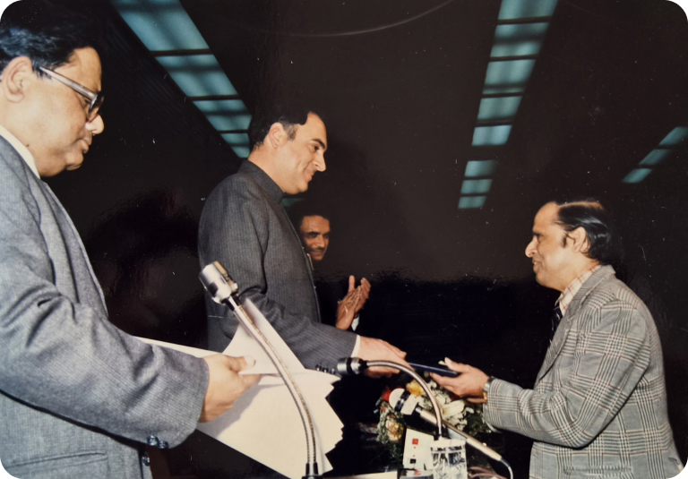
Appointed Deputy Director of ISRO Satellite Centre
Appointed Associate Director of ISRO Satellite Centre
IRS-1A, India’s first operational remote sensing satellite, developed under his leadership, successfully launches from the Soviet Cosmodrome at Baikonur aboard their Vostok-2M rocket
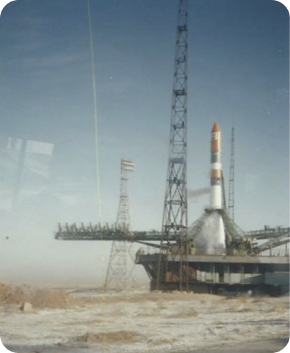
Appointed Director of ISRO Satellite Centre, overseeing development of IRS-1B, INSAT-2, and other programmes
IRS-1B, the second of the series of indigenously developed remote sensing satellites of India, successfully launches from the Soviet Cosmodrome at Baikonur
His wife Lakshmi passes away
Receives his second Padma award, the Padma Bhushan, in the Science and Engineering category
INSAT-2A and 2B, India’s first multipurpose satellites (providing telecommunications, television broadcasting, meteorological and search and rescue services) launch from French Guiana using the European Ariane 4 launch vehicle
The first flight of the indigenously developed launch vehicle PSLV narrowly misses success due to a software error
Takes charge as Chairman of ISRO and Secretary of the Department of Space
Appointed Chairman of the Space Commission, a position he held for nearly a decade under four successive Prime Ministers
The PSLV achieves its first successful launch
India’s first second-generation operational remote sensing satellite, IRS-1C, is launched by a Molniya-M launch vehicle from the Baikonur Cosmodrome
He proposes an Indian lunar mission during a public lecture in New Delhi
Receives his third Padma award, the Padma Vibhushan, in the Science and Engineering category
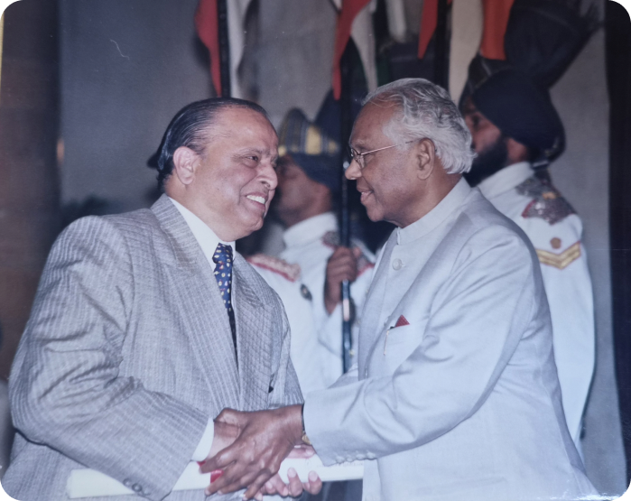
A new class of launch vehicle capable of launching heavy communication and navigation satellites, the GSLV, achieves its first successful test flight, making India one of the six countries in the world to demonstrate capabilities for geostationary satellite launches
Elected President of the Indian Academy of Sciences
MetSat-1, India’s first dedicated meteorological satellite, is launched on the indigenous PSLV at Sriharikota
Conferred the title of Officer of the Légion d’honneur, France’s highest and most prestigious national order of merit
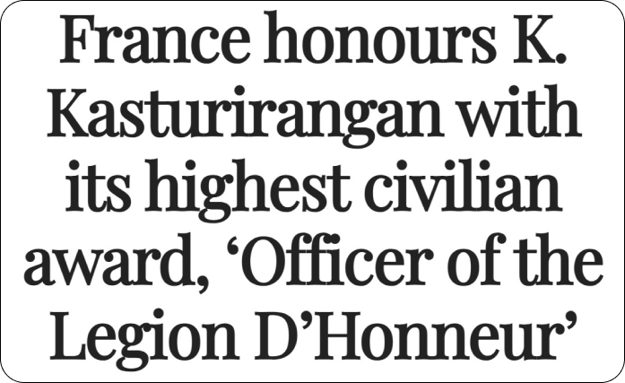
MetSat-1 is renamed Kalpana-1, in honour of astronaut Kalpana Chawla who was killed when Space Shuttle Columbia disintegrated on reentry
Following a midnight phone call nominating him to the Rajya Sabha, he steps down as Chairman of ISRO
Becomes Director of the National Institute of Advanced Studies (NIAS) in Bengaluru
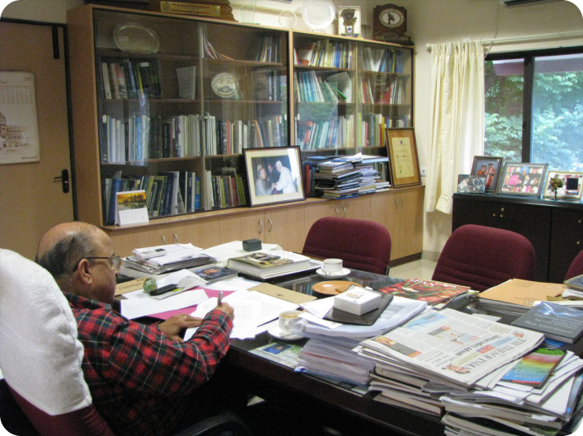
Elected President of the Indian National Academy of Engineering
Appointed Academician of the Pontifical Academy of Sciences by Pope Benedict XVI. He is the fourth Indian to be appointed to the Academy after C.V. Raman, M.G.K. Menon and C.N.R. Rao.
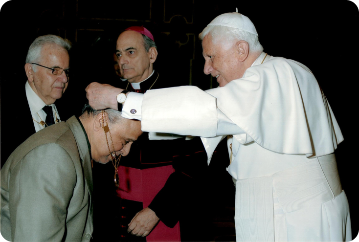
Delivers a 29-minute speech in the Rajya Sabha in support of the Indo-US nuclear 123 Agreement
Chandrayaan-1, the Moon mission he championed for years, is successfully launched
Becomes the first chairman of the Karnataka Knowledge Commission (KKC)
Joins the Planning Commission under Prime Minister Manmohan Singh, with charge of Science and Technology, Environment, Forests, Agriculture Research, and Climate Change
Chairs the High Level Working Group on the Western Ghats, constituted by the Ministry of Environment and Forests
Appointed Chancellor of Jawaharlal Nehru University, New Delhi
The comprehensive report on the Western Ghats is released by the High-Level Working Group which he chaired
Delivers the convocation address at IISc, Bengaluru, at its first ever convocation ceremony
Awarded the Rajyotsava Prashasti by the Government of Karnataka
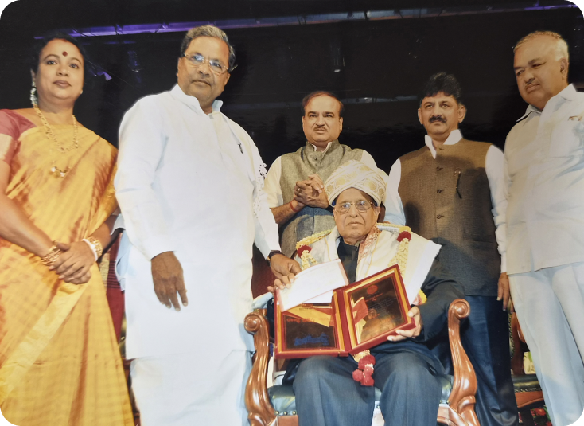
Astrosat, India’s first dedicated multi-wavelength space observatory and a mission he championed, is successfully launched
The Hesaraghatta campus of the International Centre for Theoretical Sciences (ICTS), an institute Dr Kasturirangan was closely involved in establishing, is inaugurated
Chairs a committee constituted by the Government of India to develop the National Education Policy (NEP)
The Draft National Education Policy 2020 is officially released
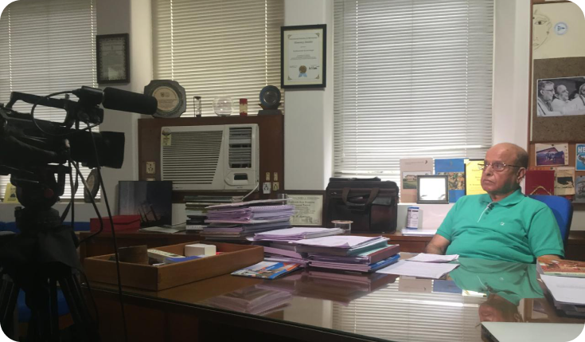
His book Space and Beyond is published by Springer Nature
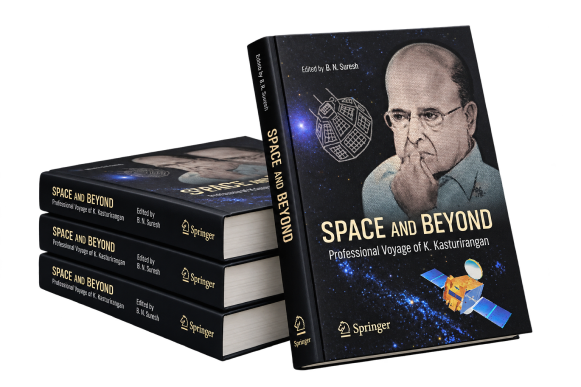
The National Curriculum Framework for School Education, formulated by a steering committee under his stewardship, is released
Passes away at the age of 84 at his residence in Bengaluru